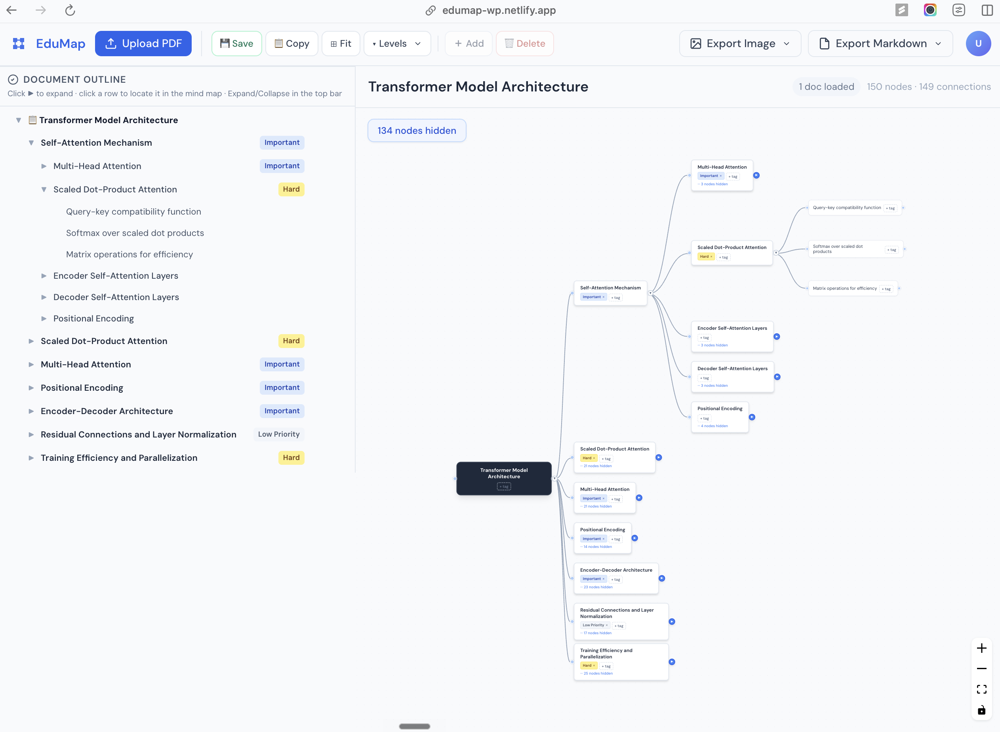
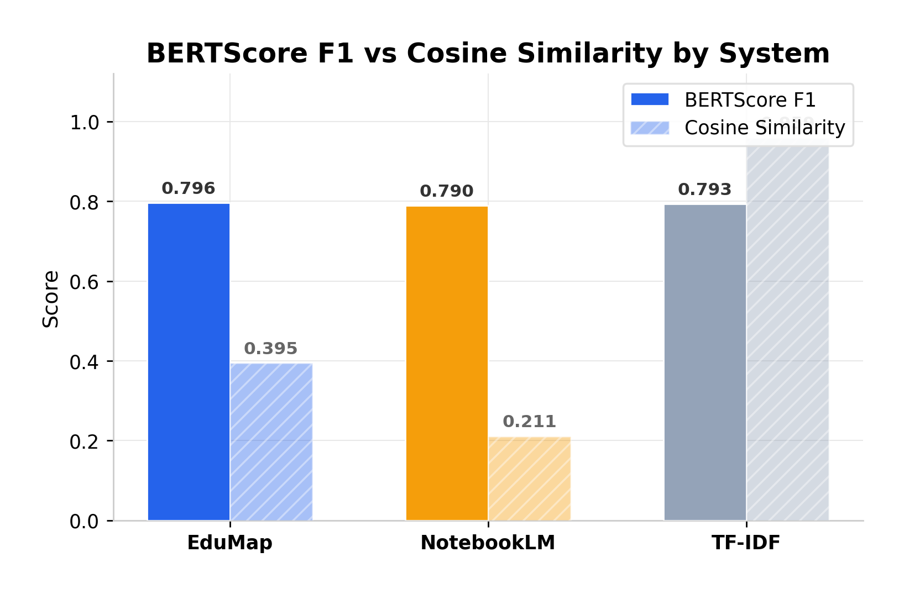
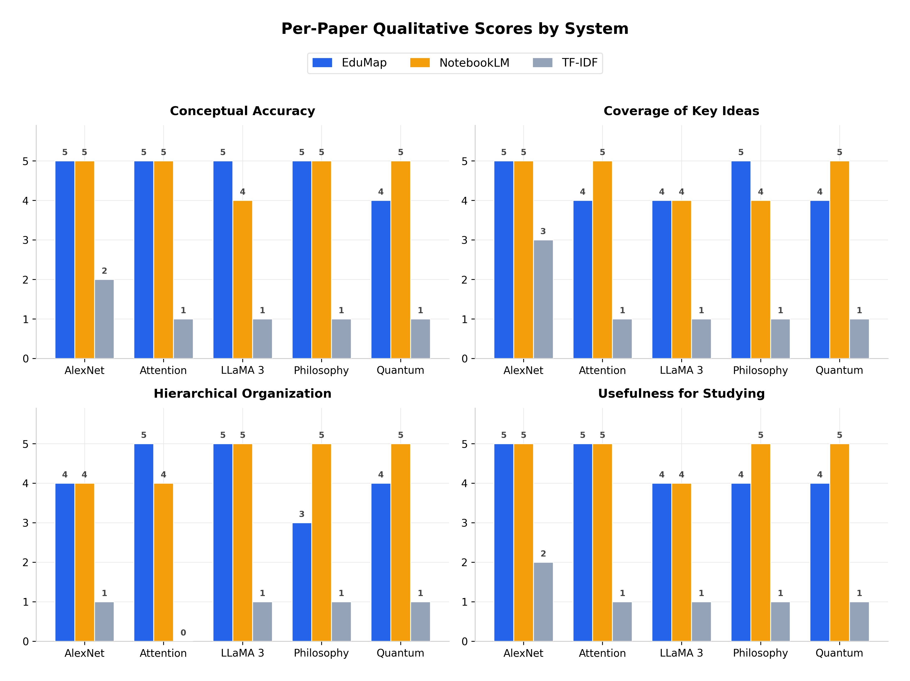
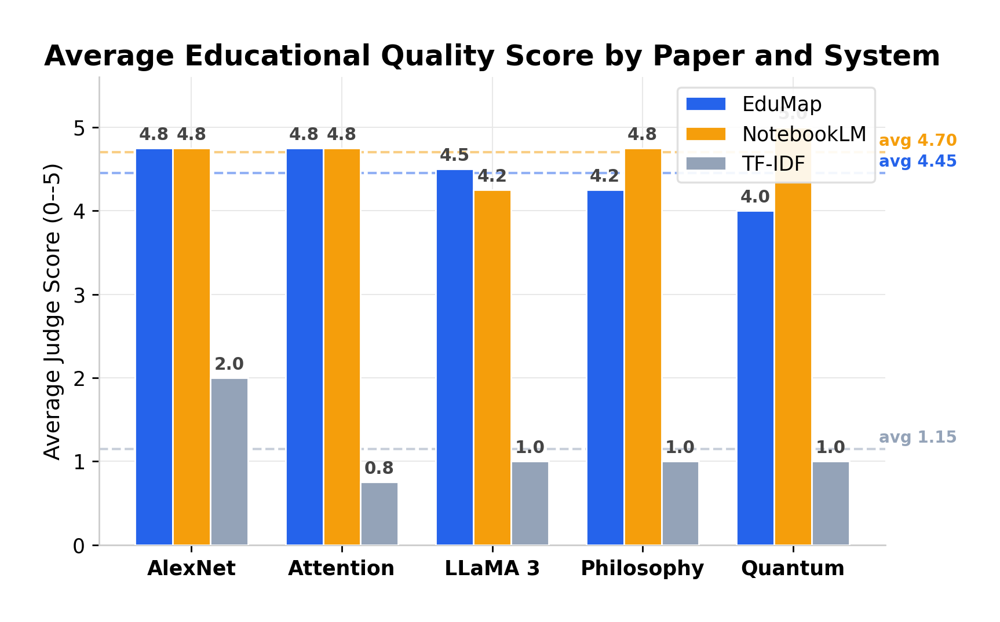

Students and researchers regularly navigate dense, hierarchically structured PDFs. However, traditional PDF viewers force readers to process this complex information linearly, requiring them to mentally reconstruct the document's underlying structure. While existing AI summarizers (like NotebookLM) can condense text, they produce static outputs that strip away crucial visual and structural relationships, treating foundational concepts and highly technical arguments exactly the same.
EduMap shifts the paradigm from passive reading to active, interactive learning. By combining layout-aware parsing with advanced Large Language Models, EduMap automatically transforms long, complex academic papers into structured, editable mind maps. It serves not just as a summary, but as a personalized "study artifact" that reduces cognitive load, preserves document hierarchy, and helps users prioritize their focus.

EduMap interface: PDF-derived mind map with synchronized editing.
Experience a seamless workflow with a side-by-side Markdown editing panel and an interactive React Flow mind map. Powered by a centralized state management system, any edit you make in the text or on the canvas stays perfectly in sync in real time.
Academic papers are more than just text. EduMap's backend precisely extracts figures, complex formulas, and tables, flattening them into a comprehensive multimodal context. This ensures critical visual data is deeply integrated into your generated mind map.
We designed EduMap to be a scaffolding for your thoughts, not a replacement. A unique pencil badge trust mechanism clearly distinguishes your manual edits from the original AI-generated baseline. Combined with a robust undo system and comprehensive export options, you retain complete control over your knowledge graph.
To overcome the limitations of standard text-only extractors, our backend utilizes a Python-based, layout-aware parsing program. It intelligently categorizes content into body text, figures, tables, and formulas. For complex, vector-drawn figures that traditional methods miss, we engineered a caption-anchored region rendering technique. Images are then sent alongside their surrounding academic text to a Vision model (e.g., GPT-4o), ensuring descriptions are highly accurate and contextually grounded.
To prevent the AI from simply copying physical section headers or experiencing structural hallucinations, EduMap uses a decoupled, two-step extraction strategy:
Behind the scenes, EduMap utilizes a custom two-way conversion logic between Markdown and the graph node structure, ensuring zero data loss or hierarchy disruption during user edits. To guarantee high availability, the infrastructure includes an automatic model failover mechanism that seamlessly switches between Gemini, OpenAI, and Claude APIs if network issues arise.
Automated testing showed that while all systems achieved similar BERTScore F1 (approx. 0.79), EduMap achieved a significantly higher Cosine Similarity (0.395) compared to NotebookLM (0.211), indicating superior structural alignment with original documents.

BERTScore F1 vs Cosine Similarity by System.
Across five diverse academic papers (AlexNet, Attention, LLaMA 3, Philosophy, and Quantum), EduMap maintained a high Average Judge Score (avg 4.45), closely competing with NotebookLM (avg 4.70) while offering significantly more structural utility than TF-IDF (avg 1.15).

Average Educational Quality Score by Paper and System.

Average Judge Score across systems.
EduMap demonstrates that combining multimodal extraction with a two-stage LLM orchestration strategy can transform dense academic PDFs into interactive, hierarchical mind maps that go beyond what linear summarization tools offer. Across five structurally diverse papers, EduMap achieved comparable semantic preservation to NotebookLM (BERTScore F1 of 0.796 vs. 0.790) while producing an editable, synchronized graph format rather than flat text. The system's weakest point, hierarchical organization on argumentative, non-hierarchical documents like philosophy papers, points to a genuine limitation of the mind map format itself, not just the pipeline. A core engineering contribution is the paired markdown-and-graph editing system with an exportable original baseline, giving users a clear boundary between their own thinking and what the AI generated. Future directions include citation-aware node linking, confidence signaling for uncertain extractions, and collaborative real-time editing. We thank Professor Andy Exley and Daanish Hindustani for their guidance throughout this project, and our classmates for their constructive feedback during the idea pitch and poster presentation.